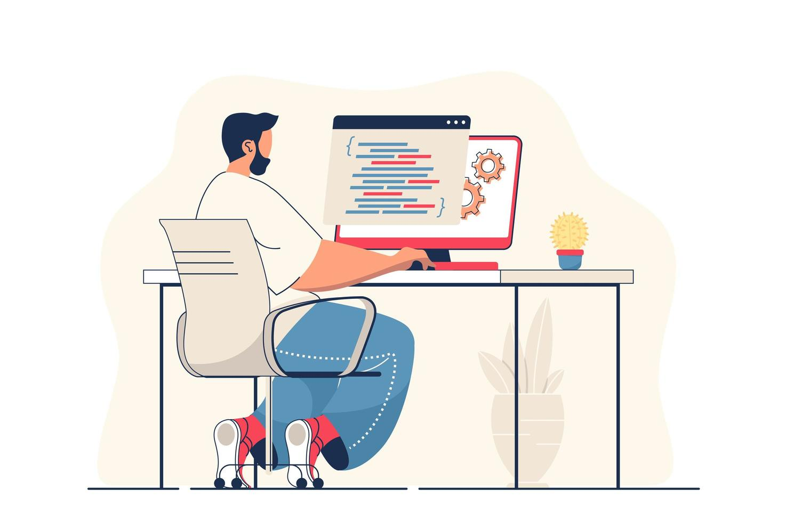
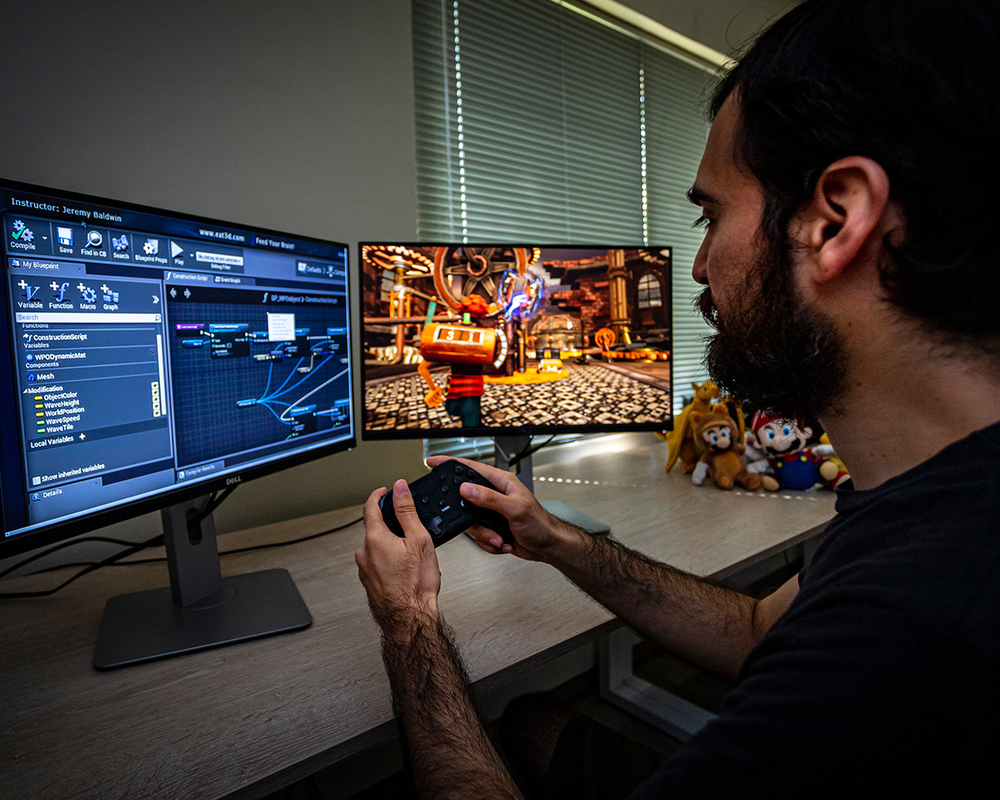
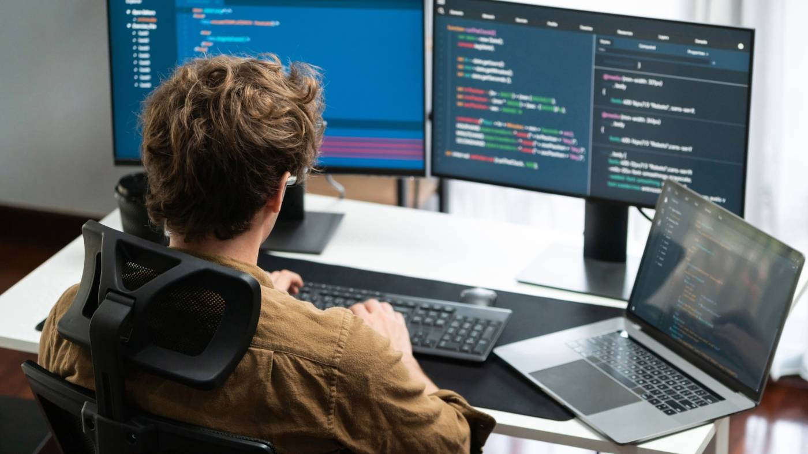
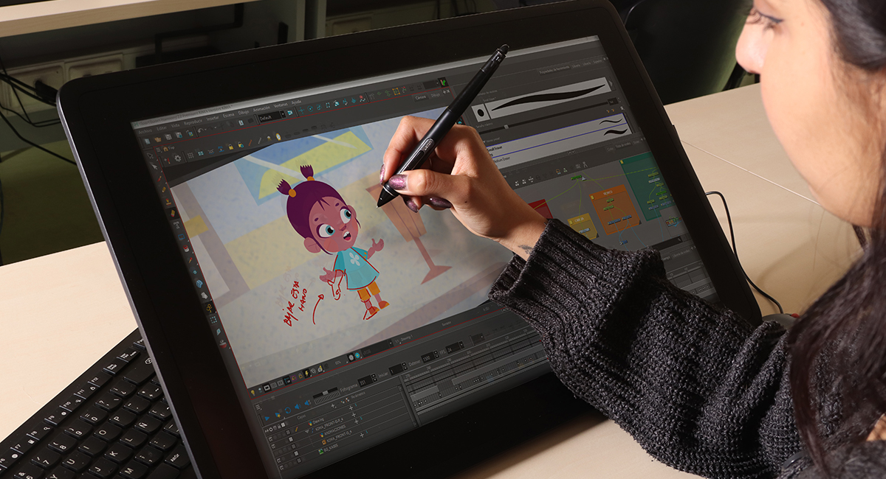

Interfaces
Desarrollar aplicaciones multimedia con un alto grado de utilidad y seguridad.
Esta carrera nace para cubrir el desarrollo de las aplicaciones multimedia, que en los últimos años ha despuntado. El estudiantado que ingrese no necesita tener conocimientos previos en ninguna de las áreas en las que se enfoca el programa.
¡Contactanos!La persona profesional en Informática y Tecnología Multimedia está capacitada para:
Desarrollar aplicaciones multimedia con un alto grado de utilidad y seguridad.
Diseñar cualquier tipo de aplicación interactiva (videojuegos y animaciones digitales).

Desempeñarse en el manejo de redes, bases de datos, diseño gráfico, animación y programación.
Las personas interesadas en esta carrera suelen mostrar una afinidad natural por el arte, el diseño, la fotografía y la manipulación de imágenes, combinando creatividad con sensibilidad visual. A esto se suma una disposición por explorar la creación de videojuegos y animaciones por computadora, lo que refleja curiosidad por dar vida a ideas a través de medios digitales. También es fundamental una inclinación hacia la informática y la programación, ya que estas habilidades permiten materializar proyectos interactivos y funcionales. Del mismo modo, resulta importante el interés por el uso de nuevas tecnologías y la investigación constante sobre sus avances, manteniéndose al día en un entorno en permanente evolución. Finalmente, la capacidad de comunicar ideas de forma clara, tanto escrita como oralmente, completa el perfil, facilitando el trabajo en equipo y la presentación efectiva de propuestas.


Aprende a crear videojuegos desde cero, combinando programación, diseño visual y narrativa interactiva. Desarrollarás experiencias digitales que integran creatividad y tecnología para distintos dispositivos.

Desarrolla aplicaciones y sistemas interactivos utilizando lenguajes modernos y buenas prácticas de programación. Podrás construir soluciones funcionales que conectan la tecnología con las necesidades del usuario.

Explora la creación de contenido visual mediante herramientas de diseño, edición de imágenes y composición digital. Aprenderás a comunicar ideas de forma creativa y atractiva en medios digitales.

Da vida a tus ideas mediante animaciones 2D y 3D, integrando audio, video y elementos interactivos. Aprenderás a crear contenido dinámico para diferentes plataformas digitales.


Todo lo que necesitas saber antes de iniciar tu camino en esta carrera.
No es necesario contar con conocimientos previos en programación. La carrera está diseñada para iniciar desde los fundamentos básicos e ir avanzando progresivamente hacia temas más complejos. Durante el proceso, desarrollarás habilidades tanto técnicas como creativas, permitiéndote aprender a tu propio ritmo mientras adquieres una base sólida.
A lo largo de la carrera tendrás la oportunidad de desarrollar una amplia variedad de proyectos, como páginas web, aplicaciones interactivas, videojuegos, animaciones y contenido multimedia. Estos proyectos integran diseño, programación y creatividad, permitiéndote construir soluciones digitales completas y aplicables en distintos contextos.
Al graduarte, podrás desempeñarte en diversos sectores del mercado laboral, incluyendo instituciones autónomas, el gobierno central, industrias y empresas privadas. También tendrás oportunidades en el ámbito de la educación superior, tanto estatal como privada, así como en centros de investigación. Además, podrás trabajar en oficinas dedicadas a la consultoría y servicios computacionales, aplicando tus conocimientos en distintos entornos profesionales.
Descubre todo lo que puedes lograr combinando creatividad y tecnología. Esta carrera te brinda las herramientas para desarrollar proyectos innovadores y abrirte camino en un mundo lleno de oportunidades.
¡Contactanos!